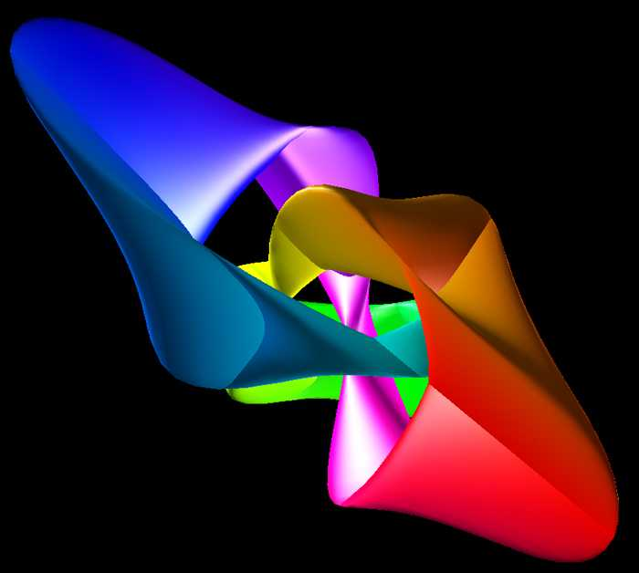
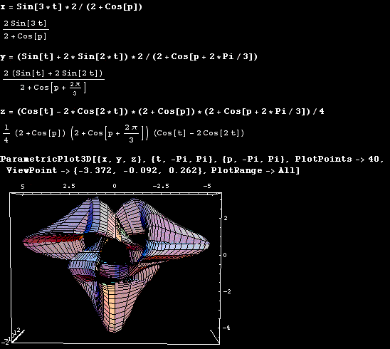

Tranguloid Trefoil
Rendered by Paul Bourke
Surface by Roger Bagula
April 2002
|
|
x = 2 sin(3 u) / (2 + cos(v))
y = 2 (sin(u) + 2 sin(2 u)) / (2 + cos(v + 2 pi / 3))
z = (cos(u) - 2 cos(2 u)) (2 + cos(v)) (2 + cos(v + 2 pi / 3)) / 4
-pi <= u <= pi
-pi <= v <= pi
|
Sample C source code


|